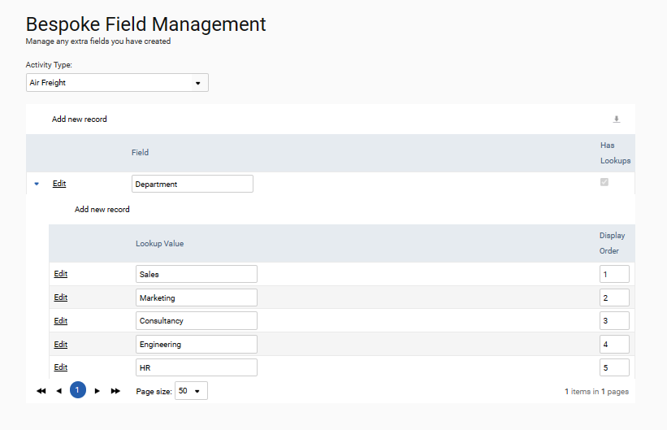
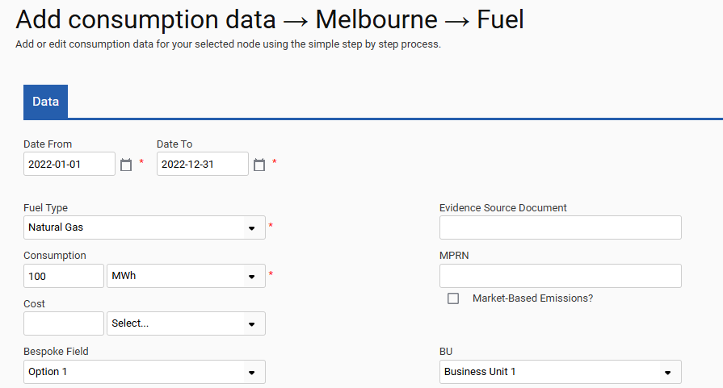

Bespoke fields allow users to input additional data with their consumption data. For example, they could be used to specify the reason for travel and the department responsible for all flights.
To create a bespoke field, first select the activity type. Select Add new record and specify the name of your bespoke field. Leave the Has Lookups field blank if you would like users to upload free text to the bespoke field. Alternatively, if you would like to limit the bespoke field to a defined list of values, select the Has Lookups check box. Click Insert to create the field. To add lookup values, select the arrow to the left of your bespoke field, select Add new record, then enter the accepted lookup value(s).
In the example below, a bespoke field named Department has been created for the activity type, Air Freight. The bespoke field contains lookup values Sales, Marketing, Consultancy, Engineering, and HR. This means the new bespoke field will be added to the Air Freight input form on the UI and input users can add a new column for their Air Freight uploads to the import template. They can use the new field to specify the department responsible for the flight.
Anything entered within the upload column that does not match a lookup value will error and not be uploaded.

Bespoke fields get added to the applicable Input forms on the UI, below the existing default fields. Below is an example of a bespoke field added to a Consumption Input form.

Note: Consumption and emissions data can be exported alongside their bespoke fields by using the data audit bespoke fields report in the reports section of the Environment module.